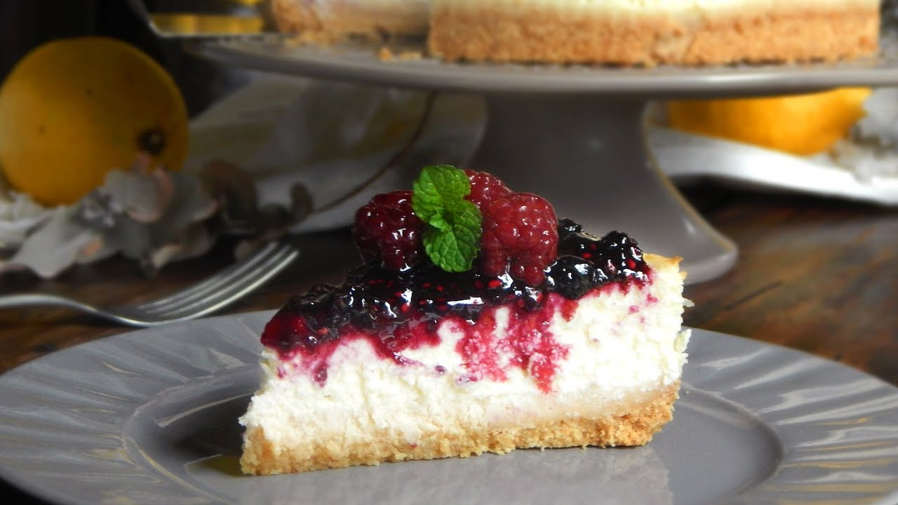
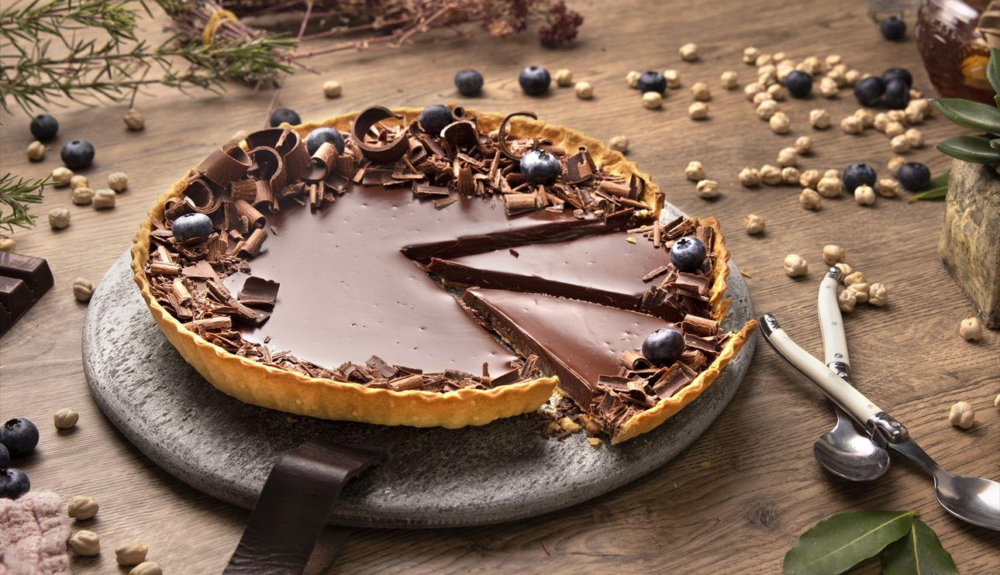
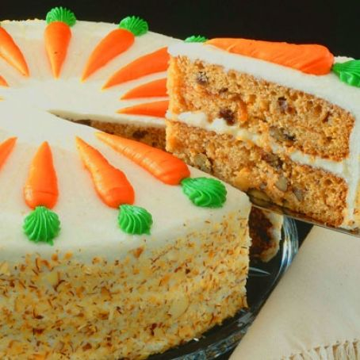
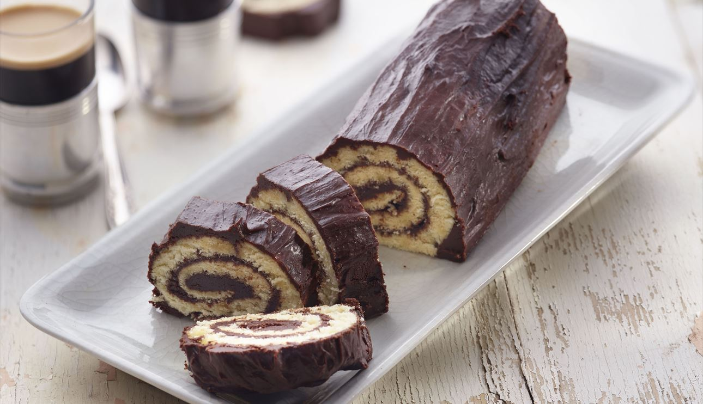
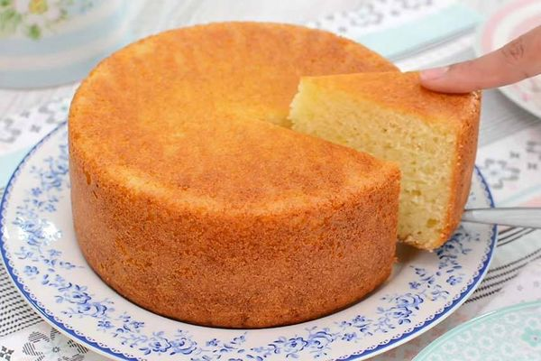
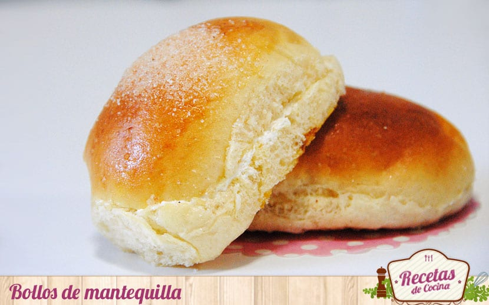
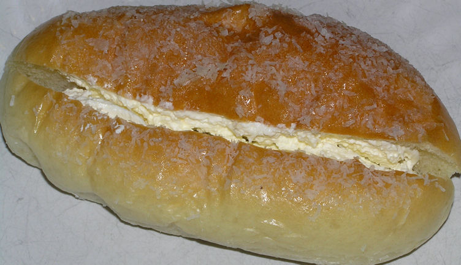

Cheesecake
Originario de Grecia y después introducido a Estados unidos, el cheesecake hoy en día es uno de los
pasteles más populares, e incluso hay restaurantes dedicados a venderlos. Hay diversas mezclas y
preparaciones, pero el principal elemento siempre ha sido el queso: crema, ricotta o neufchatel.

Tarta de chocolate
El pastel de chocolate, tarta de chocolate o torta de chocolate, es un postre conocido
internacionalmente, que se popularizó a finales del siglo XIX y se sirve frecuentemente en
reuniones, como fiestas de cumpleaños y bodas. Los ingredientes pueden variar dependiendo de la
receta.

Tarta de zanahoria
El pastel de zanahoria, tarta de zanahoria o torta de zanahoria es un pastel dulce con zanahoria
machacada mezclada en la masa. La zanahoria se ablanda en el proceso de cocción, y la tarta suele
tener una textura densa y suave. Las zanahorias mejoran el sabor, textura y apariencia del pastel.
En ocasiones se añade nuez tostada a la mezcla.

Tarta de manzana
La tarta de manzana (llamado "pay de manzana"1 en México, americanismo derivado del inglés "pie"2)
es una tarta de fruta elaborada con una masa recubierta de manzana. Existen muchas variantes y la
manzana puede ser troceada o en compota. Las manzanas pueden colocarse directamente encima de la
masa o sobre una base de crema.

Brazo de gitano
El brazo de gitano es un postre relleno que se arrolla en forma de cilindro. Se elabora con una
masa genovesa cubierta de una mermelada o crema (nata, moca, chocolate) y luego enrollada. Puede
estar decorado con una cobertura de azúcar glas, chocolate, glaseado, quemada, merengue o nata,
entre otros.

Bizcocho
El bizcocho, bizcochuelo o queque es un tipo de masa esponjosa empleada en repostería. Sus
ingredientes básicos son la harina (generalmente de trigo), los huevos enteros, la mantequilla o
algún tipo de aceite o grasa, el azúcar y una pizca de sal.

Bollo de mantequilla
El bollo de mantequilla es un dulce típico de Bilbao.
Es una especie de bollo suizo o brioche cortado por la mitad y relleno con una capa de crema de
mantequilla, huevo y una capa de azúcar por encima.

Bollo de crema
El bollo de crema es un tipo de pastel chino. Es una de las recetas más comunes de pastel en Hong
Kong, encontrándose también en la mayoría de panaderías de los barrios chinos extranjeros.